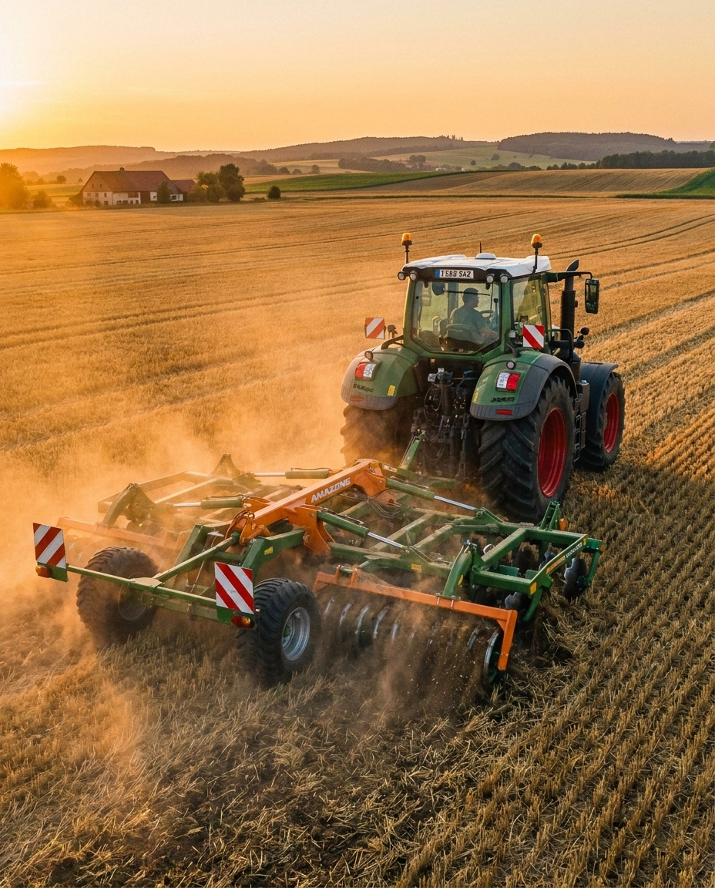
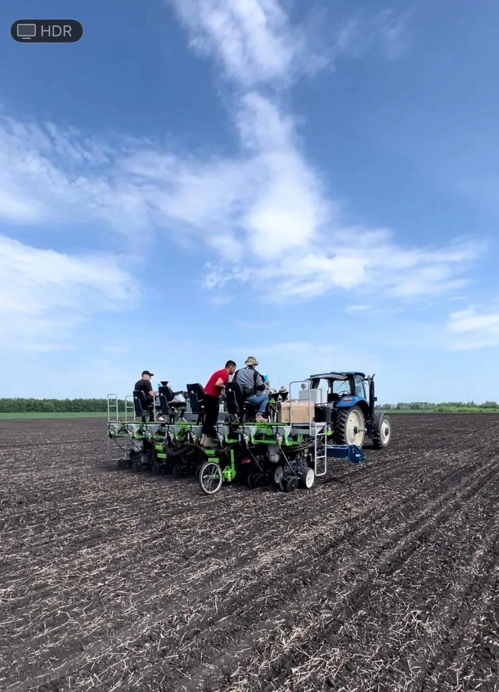
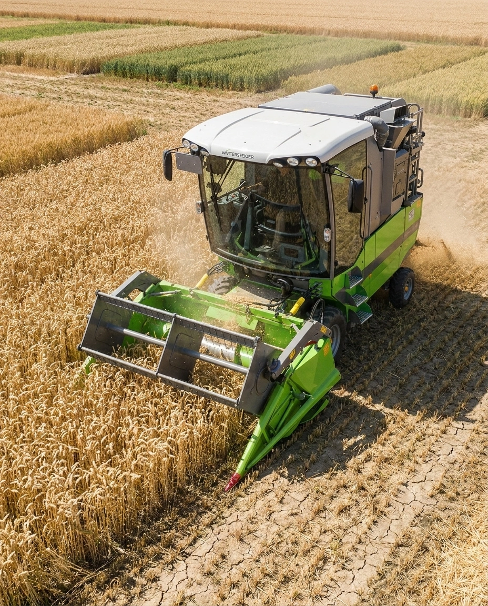
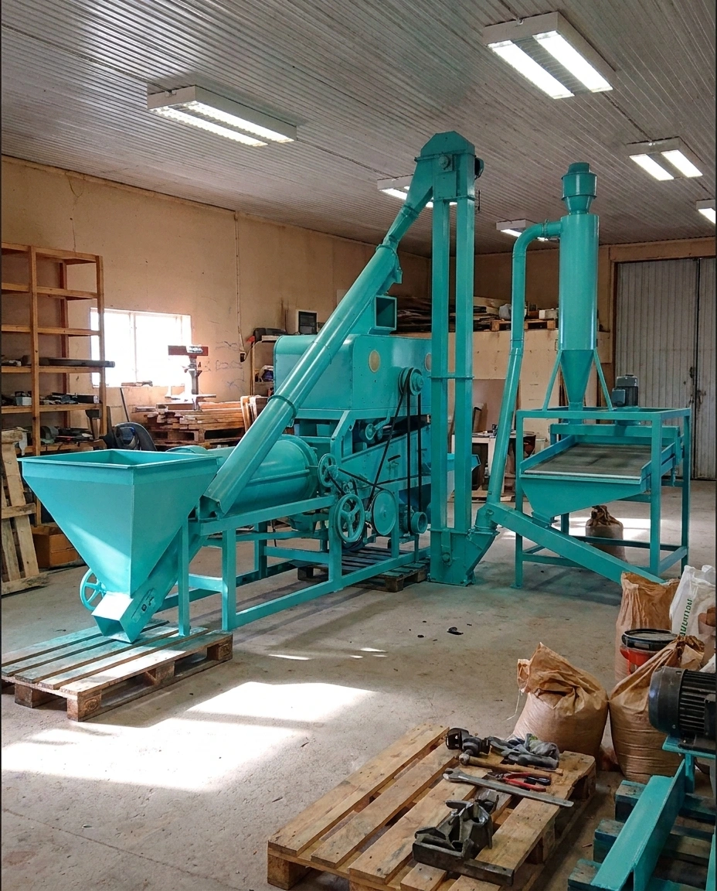

ТЕХНИКА И ОБОРУДОВАНИЕ

Почвообрабатывающая техника
Мы убеждены: качественный урожай рождается на старте, и начинается с правильной почвоподготовки. Именно поэтому парк почвообрабатывающей техники О.А.З.И.С. формируется исключительно из проверенных решений ведущих мировых брендов.
В нашей работе мы используем оборудование Amazone, Lemken, Väderstad и других признанных производителей, способных обеспечить наилучшее качество обработки.

Посевная техника
Одним из ключевых факторов успеха в нашей работе является применение современной посевной селекционной техники отчественных и импортных производителей: WINTERSTEIGER, ZÜRN Harvesting, HALDRUP, КЛЕН, Maschio Gaspardo. Это позволяет нам добиваться безукоризненной точности посева для получения равномерных всходов и реализации генетического потенциала семян.

Уборочная техника
Для обеспечения абсолютной генетической чистоты и бережного обмолота при уборке мы используем высокотехнологичные селеционные комбайны и оборудование, исключающие травмирование семян и позволяющие получать семенной материал наивысшего качества.
Парк уборочной техники О.А.З.И.С включает в себя: WINTERSTEIGER, ZÜRN Harvesting, HALDRUP, Sampo-Rosenlew, Kubota.

Машины для послеуборочной подготовки
Для финальной очистки и калибровки нами используются современные зерноочистительные машины: Petkus, Cimbria.